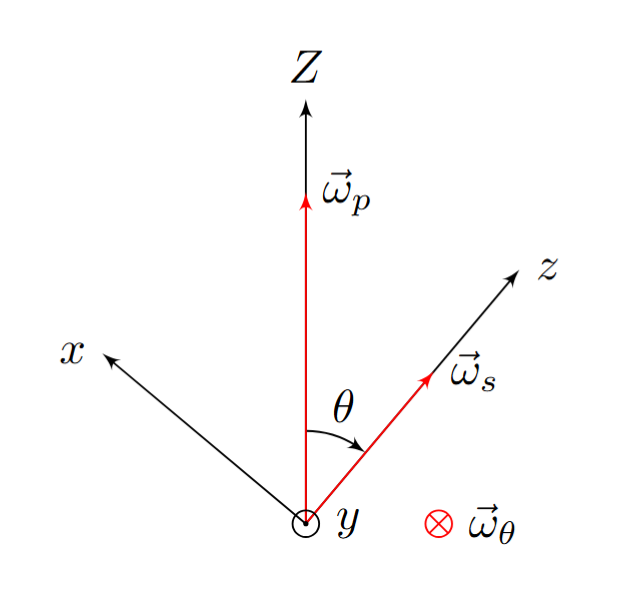
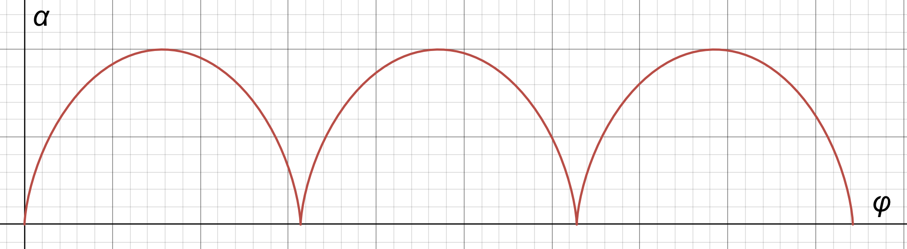

X25 (2025) — English translation
We use Euler's formula for a rigid body.
By definition, the angular momentum of an element of mass $dm$:
Let's expand the double vector product in the expression for \(d\vec{L}\): $$ d\vec{L} =dm (\vec{r} \times (\vec{\Omega} \times \vec{r})) = dm (\vec{\Omega}r^2 - \vec{r}(\vec{\Omega} \cdot \vec{r})). $$Распишем поrayенное vectorное expression покомпонентно: $$ dL_x = dm\left(\Omega_x(X^2 + Y^2 + Z^2) - X(\Omega_xX + \Omega_y Y + \Omega_z Z)\right), \\ dL_y = dm\left(\Omega_y(X^2 + Y^2 + Z^2) - Y(\Omega_xX + \Omega_y Y + \Omega_z Z)\right), \\ dL_z = dm\left(\Omega_z(X^2 + Y^2 + Z^2) - Z(\Omega_xX + \Omega_y Y + \Omega_z Z)\right). $$ Simplifying, we get the answer.
For example, the coordinates of the center of mass can be written as $$X_c = \frac{1}{m} \int X dm; \quad Y_c = \frac{1}{m} \int Y dm, \quad Z_c = \frac{1}{m} \int Z dm. $$
In further paragraphs the formulas obtained here are not used.
The answer is obtained by integrating over $dm$ the expressions of the previous paragraph.
In the principal axes, the expressions for the angular momentum components $\vec{L}$ take the form $$L_x = I_x \omega_x, \qquad \qquad L_y = I_y \omega_y, \qquad \qquad L_z = I_z \omega_z.$$This gives the answer.
According to the condition $$T = \frac{1}{2} \vec\omega \cdot \vec{L}.$$Using найденное выше expression for $\vec L$, we arrive at the answer.
Let us differentiate the previously obtained expression for $\vec L$. Since the unit vectors of the coordinate system are movable, they also need to be differentiated. $$ \dot{\vec{L}} = I_x \dfrac{d}{dt}(\omega_x \vec{e}_x) + I_y \dfrac{d}{dt}(\omega_y \vec{e}_y) + I_z \frac{d}{dt}(\omega_z \vec{e}_z) = \\ = I_x \dot{\omega}_x \vec{e}_x + I_y \dot{\omega}_y \vec{e}_y + I_z \dot{\omega}_z \vec{e}_z + I_x \omega_x \dot{\vec{e}}_x + I_y \omega_y \dot{\vec{e_y}} + I_z \omega_z \dot{\vec{e}}_z = \\ = I_x \dot{\omega}_x \vec{e}_x + I_y \dot{\omega}_y \vec{e}_y + I_z \dot{\omega}_z \vec{e}_z + (\vec\omega \times (I_x \omega_x \vec{e}_x + I_y \omega_y \vec{e}_y + I_z \omega_z \vec{e}_z)) = \\ = I_x \dot{\omega}_x \vec{e}_x + I_y \dot{\omega}_y \vec{e}_y + I_z \dot{\omega}_z \vec{e}_z + (\vec{\omega} \times \vec{L}) $$Распишем в координатах vectorное произведение: $$ [\vec{\omega} \times \vec{L}] = \begin{vmatrix} \vec{e}_x & \vec{e}_y & \vec{e}_z \\ \omega_x & \omega_y & \omega_z \\ L_x & L_y & L_z \end{vmatrix} = \begin{matrix} \vec{e}_x(\omega_y L_z - \omega_z L_y) + \vec{e}_y(\omega_z L_x - \omega_x L_z) + \vec{e}_z(\omega_x L_y - \omega_y L_z) \end{matrix} $$Thus we get проекции $\dot {\vec L}$ на оси системы $Oxyz$.
Projecting $\vec\omega_s, \vec\omega_{\theta}, \vec\omega_{\varphi}$ onto the axes $x$, $y$, $z$ and taking into account $$\vec\omega_{\theta} = -\dot\theta \vec{e}_y, \qquad \qquad \vec\omega_{\varphi} = \dot\varphi \vec e_Z,$$ we get the answer.

The moment of gravity is expressed by the formula $$\vec{M} = \vec{l} \times m \vec g,$$ from которой it follows, что $\vec{M}$ перпендикулярен плоскости $OZz$. From the equation momentов в неподвижных осях it follows $$\dot L_1 = \dot L_Z = M_Z = 0.$$ From the equation Эйлера for оси $Oz$ it follows $$I_z \dot{\omega}_z + (I_y - I_x) \omega_x \omega_y = 0.$$ В силу симметрии $I_x = I_y$, therefore $$\dot L_2 = I_z \dot\omega_z = 0.$$ Отметим, что перпендикулярности $\vec{M}$ and $Oz$ for сохранения $L_2$ is not enough.
Let us express $L_1$ through the projections $\vec{L}$: $$ L_1 = L_z \cos{\theta} + L_x\sin{\theta} = A \omega_x \sin{\theta} + C \omega_z \cos{\theta}. $$ Using result partа B1, we get окончательный answer for $L_1$: $$ L_1 =C(\omega_s + \dot{\varphi}\cos{\theta})\cos{\theta} + A\dot{\varphi}\sin^2{\theta}. $$For $L_2$ true $$L_2 = L_z = C\omega_z = C(\omega_s + \dot{\varphi}\cos{\theta}).$$
In the described case $$L_1 = L_0, \qquad \qquad L_2 = L_0 \cos\theta.$$ В силу постоянства величин $L_0$, $L_1$, $L_2$ angle $\theta$ also остаётся постоянным. Using выражения for $L_1$, $L_2$ from предыдущего partа, we get систему уравнений: $$ BEEQUATION $$Solving the system, we get $$\dot\varphi = \frac{L_0}{A}$$Next зависимость $\varphi$ from time to time turns out to be simple integration.
Let's write down the expressions for potential and kinetic energies: $$T = \frac{1}{2} (C\omega_z^2 + A(\omega_x^2 + \omega_y^2) ) = \frac{1}{2} (C(\omega_s + \dot\varphi \cos\theta)^2 + A(\dot\theta^2 + \dot\varphi^2 \sin^2 \theta)), \\ \Pi = mgl \cos\theta.$$Полная energy: $$ E = T + \Pi. $$
The answer is obtained by solving the system for $\omega_s$, $\dot\varphi$. \begin{equation} \left\{ \begin{aligned} L_1 &= \dot{\varphi}(A\sin^2{\theta} + C\cos^2{\theta}) + C\omega_s\cos{\theta} \\ L_2 &= C(\omega_s + \dot{\varphi}\cos{\theta}) \end{aligned} \right. \end{equation}
Note. As is known, the total energy is determined up to a constant, which for convenience can be set equal to zero.
Substitution into the expression for the energy $\omega_s$ and $\dot{\varphi}$ from the previous paragraph leads to the result $$E = \frac{A}{2} \dot\theta^2+\frac{(L_1 - L_2 \cos\theta)^2}{2 A \sin^2\theta} + mgl \cos\theta + \frac{L_2^2}{2C}.$$ Последнее константное term можно отбросить: $$E = \frac{A}{2} \dot\theta^2+\frac{(L_1 - L_2 \cos\theta)^2}{2 A \sin^2\theta} + mgl \cos\theta.$$ The resulting expression yields the answer.
For given initial conditions $$L_1 = L_2 = 0.$$ Energy conservation law в этом сrayае запишется в виде $$\frac{A\dot{\theta}^2}{2} + mgl\cos{\theta} = mgl\cos{\theta_0}.$$ Hence выражается зависимость $\dot\theta(\theta)$: $$\dot{\theta} = \pm \sqrt{\frac{2mgl}{A}(\cos{\theta_0} - \cos{\theta})}.$$ Движение от $\theta = \theta_0$ до $\theta = \pi$ с $\dot\theta > 0$ занимает четверть periodа. For нахождения этого времени требуется проинтегрировать equation $$dt = \frac{d\theta}{\dot\theta}.$$Integrating: $$\frac{T}{4} = \sqrt{\frac{A}{2mgl}}\int\limits_{\theta_0}^{\pi}{\frac{d\theta}{\sqrt{\cos{\theta_0} - \cos{\theta}}}}.$$From here follows the answer.
Let's introduce the variable $\beta = \pi - \theta$, then $\beta \ll 1$. Method 1 Taking into account the smallness of $\beta$, the expression for energy will be written as: $$ E = \frac{A\dot{\beta}^2}{2} + mgl\frac{\beta^2}{2}\\ $$ Такой вид уравнения соответствует гармоническим колебаниям с periodом $$ T = 2\pi \sqrt{\frac{A}{mgl}}. $$ 2 метод Введём $\beta_0 = \pi - \theta_0$. Transforming интеграл $$\int\limits_{\theta_0}^{\pi}{\frac{d\theta}{\sqrt{\cos{\theta_0} - \cos{\theta}}}}$$ в рассматриваемом for/atближении. $$\int\limits_{\theta_0}^{\pi}{\frac{d\theta}{\sqrt{\cos{\theta_0} - \cos{\theta}}}} = \int\limits_{\beta_0}^{0}{\frac{-d\beta}{\sqrt{\cos{(\pi - \beta_0)} - \cos{(\pi - \beta)}}}} = \int\limits_{0}^{\beta_0}{\frac{d\beta}{\sqrt{\cos \beta - \cos \beta_0}}} \simeq \\ \simeq \sqrt{2} \int\limits_{0}^{\beta_0}{\frac{d\beta}{\sqrt{\beta_0^2 - \beta^2}}} = \sqrt{2} \int\limits_{0}^{\beta_0}{\frac{\frac{d\beta}{\beta_0}}{\sqrt{1 - \frac{\beta^2}{\beta_0^2}}}} = \sqrt{2} \int\limits_{0}^{1}{\frac{dx}{\sqrt{1 -x^2}}} = \sqrt{2} \frac{\pi}{2}.$$ Подстановка найденного значения в исходное expression for $T$ leads to the answer obtained method 1.
1 method
Taking into account the smallness of $\beta$, the expression for energy will be written in the form: $$ E = \frac{A\dot{\beta}^2}{2} + mgl\frac{\beta^2}{2}\\ $$ Такой вид уравнения соответствует гармоническим колебаниям с periodом $$ T = 2\pi \sqrt{\frac{A}{mgl}}. $$
Method 2
Let's enter $\beta_0 = \pi - \theta_0$. Let's transform the integral
$$\int\limits_{\theta_0}^{\pi}{\frac{d\theta}{\sqrt{\cos{\theta_0} - \cos{\theta}}}}$$ in the considered approximation.
$$\int\limits_{\theta_0}^{\pi}{\frac{d\theta}{\sqrt{\cos{\theta_0} - \cos{\theta}}}} = \int\limits_{\beta_0}^{0}{\frac{-d\beta}{\sqrt{\cos{(\pi - \beta_0)} - \cos{(\pi - \beta)}}}} = \int\limits_{0}^{\beta_0}{\frac{d\beta}{\sqrt{\cos \beta - \cos \beta_0}}} \simeq \\ \simeq \sqrt{2} \int\limits_{0}^{\beta_0}{\frac{d\beta}{\sqrt{\beta_0^2 - \beta^2}}} = \sqrt{2} \int\limits_{0}^{\beta_0}{\frac{\frac{d\beta}{\beta_0}}{\sqrt{1 - \frac{\beta^2}{\beta_0^2}}}} = \sqrt{2} \int\limits_{0}^{1}{\frac{dx}{\sqrt{1 -x^2}}} = \sqrt{2} \frac{\pi}{2}.$$ Подстановка найденного значения в исходное expression for $T$ results in the answer obtained in method 1.
In a given situation $L_1 = L_2$. Their values are instantly obtained from the expression $\vec{L}$ in the principal axes.
At $L_1 = L_2 = C\omega_0$ the expression for the energy becomes $$E = \frac{A}{2} \dot\theta^2 + mgl \cos \theta + \frac{C^2 \omega_0^2 (1-\cos \theta)^2}{2A\sin^2\theta}.$$ Expanding taking into account малости $\theta$: $$E = \frac{A\dot\theta^2}{2} + \left(\frac{C^2 \omega_0^2}{4A} - mgl \right)\frac{\theta^2}{2}.$$ For устойчивости необходимо, чтобы coefficient перед $\theta^2$ was positive, which determines the required condition.
Clue. $U(\theta)$ can be represented as a function of the new variable $s = \cos \theta$, which greatly simplifies the solution.
In the equilibrium position $\cfrac{d}{d\theta}U(\theta) = 0$. Let's move on to the variable $s = \cos \theta$. Then $$\frac{d}{d\theta} U(\theta) = \frac{d}{ds} U(s) \cdot \frac{ds}{d\theta} = \frac{d}{ds}U(s) \cdot \sin\theta.$$ hence it follows, что condition $$\frac{d}{d\theta}U(\theta) = 0$$ эквивалентно условию $$\frac{d}{ds} U(s) = 0$$ for all $\theta \in (0, \pi/2)$. We get $\cfrac{d}{ds}U(s)$ $$U(s) = mgls + \frac{\left(L_1 - L_2s\right) ^ 2}{2A\left(1-s^2\right)} \\ \frac{d}{d\theta}U(s) = mgl - \frac{(L_1 - L_2s)L_2}{A(1 - s^2)} +\frac{(L_1 - L_2s)^2}{A(1-s^2)^2}.$$Упростим expression and перейдём обратно к переменной $\theta$. Equating it to zero, we obtain the required equation.
Substituting the expressions for $L_1$ and $L_2$ from point B3 into the equation obtained in the previous point, we arrive at a quadratic equation for $\omega_p$: $$\omega_p^2 (A-C) \cos\theta_1 - \omega_p C\omega_s + mgl = 0.$$ It has two solutions, which is the answer.
Let us expand $\omega_p$ using the approximate formula $\sqrt{1 + x} \simeq 1 + \frac{x}{2}$ for $x \ll 1$. For a larger root:
For a smaller root:
Note that the frequency $\omega_p^{slow}$ coincides with the precession frequency of the “fast” top in the simplified model, that is, when the contribution of precession to the angular momentum is neglected.
Let us write the expression for energy taking into account the initial conditions: $$ L_1 = 0, \\ L_2 = C\omega_0. \\ E =\frac{A\dot{\theta}^2}{2} + mgl\cos{\theta} + \frac{C^2 \omega_0^2 \cos^2{\theta}}{2A\sin^2{\theta}} = 0. $$ Перейдём к переменной $\alpha$ по формуле: $$ \theta = \frac{\pi }{2} + \alpha. $$ Then $$ \frac{A\dot{\alpha}^2}{2} -mgl\sin{\alpha} + \frac{C^2 \omega_0^2 \sin^2{\alpha}}{2A\cos^2{\alpha}} = 0. $$Condition $\alpha = \alpha_{max}$ соответствует $\dot{\alpha} = 0$. Substituting $\dot\alpha = 0$ в equation выше and преобсовывая, we get квадратное equation на синус максимального угла отклонения: $$ \sin^2{\alpha_{max}} + \frac{C^2 \omega_0^2}{2Amgl}\sin{\alpha_{max}} - 1 = 0. $$ Решим поrayенное квадратное equation: $$ \sin{\alpha_{max}} = \pm\sqrt{1+\left(\frac{C^2 \omega_0^2}{4Amgl}\right)^2}-\frac{C^2 \omega_0^2}{4Amgl} $$ Since $|\sin \alpha_{max}| \leq 1$, it follows выбрать корень с «$+$".
Let us write an approximate expression for $\alpha_{max}$ in this case: $$ \alpha_{max} = \frac{2Amgl}{C^2\omega^2_0} \sim \frac{mgl}{C \omega_0^2} \ll 1. $$ В силу малости $\alpha_{max}$ можем рассматривать expression for энергии for малых $\alpha$. Taking into account начальных условий полная energy equals нулю. $$ \frac{A\dot{\alpha}^2}{2} + \frac{C^2 \omega_0^2}{2A} \alpha^2 -mgl\alpha = 0 $$ Такой вид выражения for энергии соответствует колебаниям с частотой $$\omega = \frac{C}{A} \omega_0,$$ амплитудой $$\alpha_0 = \frac{Amgl}{C^2 \omega_0^2}$$ and смещением от центра $$\alpha_1 = \alpha_0 = \frac{Amgl}{C^2 \omega_0^2}.$$Taking into account всех найденных parameterов движения and начальных условий we get зависимость $\alpha(t)$.
Let's express $\dot{\varphi}(t)$ using the found dependence $\alpha(t)$: $$ \dot{\varphi} = \frac{L_1 - L_2\cos{\theta}}{A\sin^2{\theta}} = \frac{C\omega_0\sin{\alpha}}{A\cos^2{\alpha}} \simeq \frac{mgl}{C\omega_0}\left(1 - \cos \left(\frac{C}{A}\omega_0 t\right)\right) $$ Integrating, we get the answer.
Expressions $\varphi(t)$, $\alpha(t)$ parametrically define a cycloid, the characteristic form of which is presented in the figure below.
The time between subsequent instants $\alpha = 0$ is $t = \cfrac{2 \pi}{\omega_0}\cfrac{A}{C}$. Substituting $t$ into the expression for $\varphi$ gives the answer.

Let's find $A$, $C$, $ l$: $$ C = \frac{(2m)R^2}{2} = mR^2 \\ A = \frac{(2m)R^2}{4} + (2m)R^2 + \frac{mR^2}{3} = \frac{17}{6}mR^2 \\ l = \frac{2m R + m \frac{R}{2}}{3m} = \frac{5}{6}R $$Substituting в формулу for $\Delta \varphi$ найденные величины (требуется also учесть, что mass волчка составляет $3m$) and get the answer.